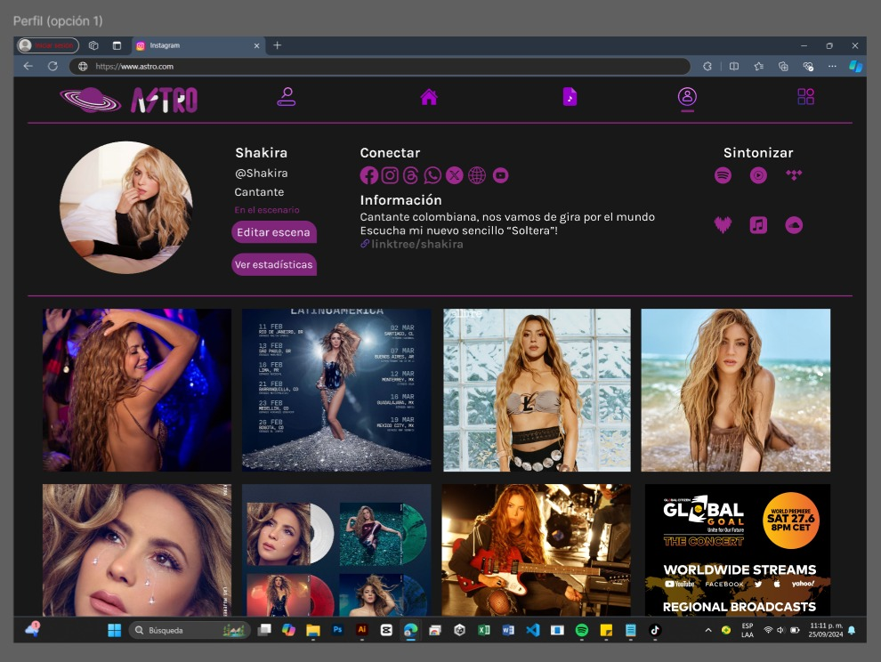

Perfil
Soy un profesional en formación con experiencia en producción musical, desarrollo de videojuegos, modelado 3D y edición de video. Actualmente trabajo en la aplicación 'Astro Production' para la industria musical.
Habilidades
Desarrollo con Flutter
HTML, CSS, JavaScript
Unity (Desarrollo de Videojuegos)
Modelado 3D
Producción Musical
After Effects y Adobe Premiere
Proyectos Destacados

Astro Production - Red social para músicos

Videojuego La Peresoza - Desarrollo en Unity
Modelado 3D - Proyecto de modelado y animación
Educación
- Universidad Tecnologica de Tlaxcala - Licenciatura en Entornos Virtuales y Negocios Digitales (2020 - Presente)
Contacto
Email: gusgerspromer@gmail.com
Teléfono: +52 2461218073